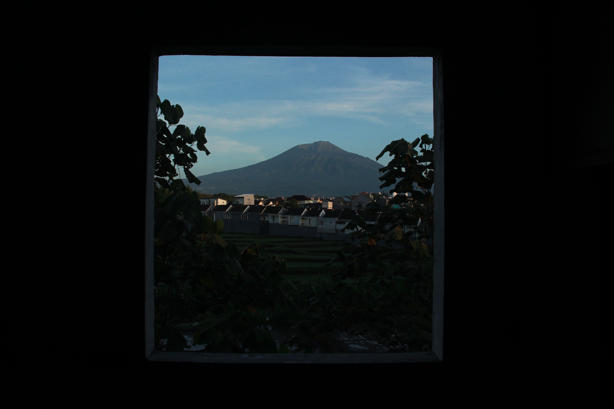

My Projects

Pemandangan di pagi hari yang menyejukkan sedikit menghilangkan beban fikiran. Bersyukur pernah berada di tempat ini.

Perjalanan yang tak di sengaja menuju Puncak Budug Asu. Jalan yang naik turun dan panjang terbayar dengan indahnya pemandangan.

Langit terkadang menampakkan kegelapannya, tetapi juga memanjakan mata dengan keindahan yang dimilikinya.

Teruslah berjalan walaupun kau siput, nanti kau akan sampai pada tujuan.

Keramaian di sekitar pasar, terlihat berbagai macam keadaan tapi tak menyurutkan semangat berjuang.